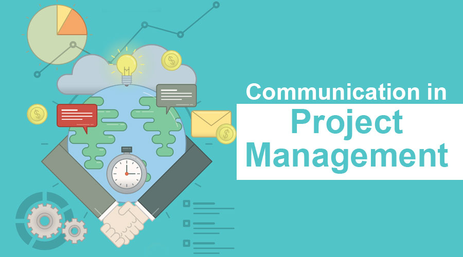
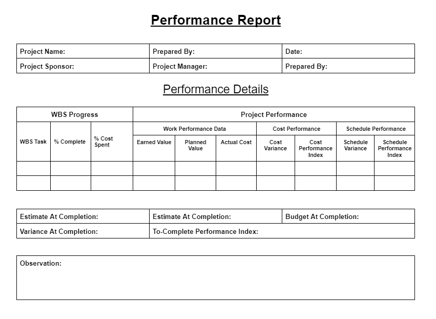

Project Communications Management - Managing Communications
By: Daniel Cisneros Siliezar
If you are a current or aspiring Agile project manager working in the sector of information technology, you are familiar with the topic of project communications management, more specifically on how to manage communications.You are also looking to enhance your knowledge and skills in being a better project manager that practices Agile methodologies. How would you manage communications within projects? How would you use technology to enhance information creation and distribution? How would you use appropriate media for communications? How would you report on performance?
What Does Managing Communications Mean?
Understand that project communications management involves processes that ensure the correct information is sent, received, and understood by recipients. One of these processes involves managing communications, which throughout the project’s lifecycle is a major part of a project manager’s duties. Sending the information about the project towards the right people at the right time and in a format that is readily utilizable is just as imperative as creating the information in the first place. Communications analysis to stakeholders would be a fantastic starting point for communications management. It is the responsibility of project managers and their teams to delegate which information is given to who, but should also decide on the best way to develop and carry out the information.
Ask yourself these questions when developing and distributing information:
- Is it good enough to send written reports of information regarding the project?
- Should just text suffice, or implement visuals or videos to convey the information better?
- Would meetings by themselves be effective in distributing some information about the project?
- Would written communications and meetings be both required for information regarding the project?
- What is the most effective way to communicate information to team members that are working virtually?
During the execution of a project, teams must make note of considerations necessary for information management and often end up changing business processes by improving communications. Project teams may change the procedures and policies, implement modifications to information systems, or utilize new technologies to facilitate the distribution of information. After answering the questions listed above, project managers and their teams should make a final decision on how to effectively develop and distribute information. As an Agile project manager, please consider how technology would be used, methods of media appropriately used for different situations, and giving reports based on project performance.
Enhancing Information Development and Distribution with Technology
Technology can ease the process of developing and distributing information. Most organizations and people utilize email, instant messaging, telephones, websites, text messaging, cellular phones, and other devices needed to communicate information. As a project manager, keep in mind the following important facts:
- Utilizing a specific information system made for project management, you can develop and organize documents in regards to the project, meeting minutes, schedules, customer requests, and even making all of this information readable in some sort of electronic format.
- All of this information can be stored on the cloud or directly onto your local machine.
- Use stored electronic templates and samples of documents for the project to make your life easier by making the standard forms easily accessible.
- Make sure you have backup plans in case there may be a bad scenario that something goes wrong with standard communications technology.
Utilizing the Appropriate Methods and Media for Communications
There are three classifications of methods for communications:
- Interactive communication - At least two people interact with each other to trade information thru phone calls, video conferencing, or meetings. This is typically the most effective procedure to ensure understanding between the interacting parties.
- Push communication - This method involves sending out or pushing information to receiving individuals without their request. Communications media include emails, faxes, voice messages, and reports. Information is distributed, but not checking to see if the receiving parties understood the received information.
- Pull communication - This method involves recipients' requests to have information sent to them. Communications media include bulletin boards, websites, blogs, wikis, and e-learning modules.
As an Agile project manager, you must know when to utilize different forms of communications media to delegate important information. There is a useful table attached below to signify what the most useful media can be used for different situations.
Performance Reporting
Performance reporting is another important tool in the arsenal that can be utilized in project communications management. Thanks to performance reporting, stakeholders are kept informed about resource utilization to meet project objectives. Employees are also incentivized to have some sort of progress to report. There are a few important reports that project managers must be familiar with (listed below):
- Progress reports: These reports express the accomplishments of the project team throughout a certain period of time. On many projects, each team member will prepare some sort of monthly or weekly progress report. Leaders of these teams typically create merged progress reports based on the reports submitted by each of the team members.
- Status reports: These reports express where the project currently stands at a certain point in time. They go into detail about where the project stands regarding meeting scope, time, and cost goals. These status reports can have different formats based on the needs of the stakeholders.
- Forecasts: These are important, as they estimate the future status of a project and progress made based on information and trends documented in the past. As an Agile project manager, you can utilize earned value management to assist you in estimating budget and completion date based on the progress of the project. 
Conclusion
As an Agile project manager, you will be responsible for managing communications within a project. You must know what it means to manage communications, enhance information development and distribution with technology, what media to utilize for certain situations, and how to report on performance throughout a given project. You want to keep your stakeholders satisfied with the information of the project, so that the project continues to receive funding and you all get paid. Now you understand another important aspect of Agile project management and this blog post will assist you in any future scenarios if needed.
References
- Information Technology Project Management book by Kathy Schwalbe 9th Edition
- https://project-management-knowledge.com/definitions/m/manage-communications/